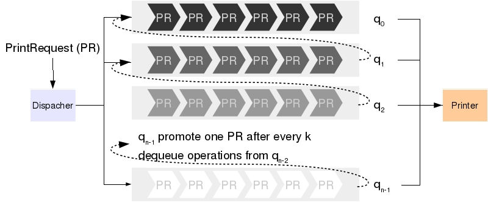

假设一台打印机服务器为许多用户提供打印服务. 该打印机同一时间只能打印一份文档. 因此, 对于不同时刻送达的打印任务, 我们需要设计调度策略来安排各个任务何时被执行.
最简单的调度策略为“先来先服务” (First in, First Serve (FIFS)), 即, 按照任务到来的先后顺序安排打印, 先来的任务先被执行. FIFS 的优点为简单, 公平(只要排队, 任何任务都会被执行). 但缺点在于对于一些耗时较小的打印任务(比如, 页数比较少的文档)会等待较长的时间 (设想你去超市买一瓶水, 发现排在你前面人买了一车食物准备冬眠).
为了解决 FIFS 的问题, 我们可以给打印任务分配不同的优先级 (打印页数越少, 优先级越高), 不同优先级的任务放入对应优先级的队列中. 假设服务器有 \(n\) 个队列 \(q_0, q_1, ..., q_{n-1}\), 其中 \(q_0\) 的优先级最高, 其次为 \(q_1\), 而 \(q_{n-1}\) 为最低优先级. 在调度任务时, 首先从优先级最高的 \(q_0\) 队列中选择任务, 若 \(q_0\) 为空, 则从次高优先级的 \(q_1\) 队列中选择. 以此类推. 这样能够让耗时较小的任务优先执行, 从而提高了单位时间内能够服务的用户数量. 但“优先级”策略也带来了“饥饿”效应: 耗时较长的任务可能会永远得不到执行. 因此, 以上方案仍然需要修改.
最终的策略为“动态优先级”, 即, 打印任务的优先级可以动态的更新. 如果低优先级的任务长时间没有得到执行, 我们将提高它的优先级, 并把它加入较高优先级的队列中. 具体来说, 当一个队列 \(q_i\) 被访问超过一个预先设定的次数\(k\), 则优先级低于 \(i\) 的队列就可能存在饥饿. 因此, 此时我们会将一个低优先级队列中的任务移到队列 \(q_i\) 中来提升它的优先级.

以下为“动态优先级”调度策略的详细描述.
我们有三种策略初始化打印请求的优先级
最后, 做如下假设: 有一个代表时钟的变量 int clock. clock 每增加1代表时钟过了1秒. 每打印一页耗时1秒.
定义 PrintRequest 类表示打印请求. 需要包含: 文件的名称, 页数以及发出该请求时的时间.
boolean printerIdle(): 如果打印机空闲返回 true, 否则返回 falseboolean printFile(PrintRequest r): 如果打印机空闲, 则开始处理打印任务 r, 并返回 true. 否则忽略改请求, 返回 false.PrintRequest processForOneUnit(), 如果打印机空闲, 或者当前正在打印的文档还剩余超过1页则返回 null. 如果当前文档已完成, 则返回当前的打印任务对象.定义 PrintQueue 类表示一个队列 (提示: 参考 Queue 接口. 主要的操作是“进队列”和“出队列”. 同时 队列可能需要记录当前已经被访问了多少次).
定义 PrintDispatcher 类为一个队列. 它包含 n 个 PrintQueue 对象, 而相应的“进队列”, “出队列”操作则完成上述“动态优先级”策略. 包含 toString() 方法可以显示逐个队列的状态.
请根据程序运行结果分析不同参数对系统的影响.